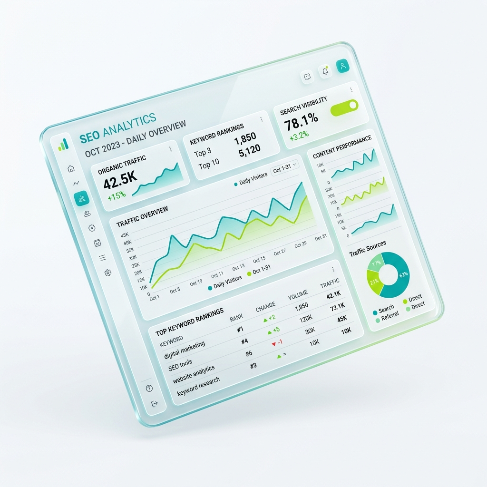
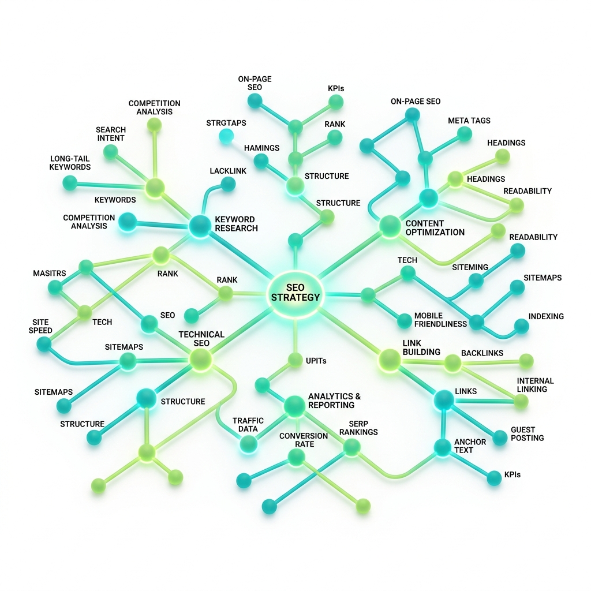

Định hướng phát triển mơ hồ
Khắc phục tình trạng "viết đại trà" nhờ cơ chế Gating khép kín. Yêu cầu hoàn thiện chiến lược (Audit & Topical Map) trước khi tạo nội dung, đảm bảo trang web đi đúng hướng.
NeverSEO — Giám đốc SEO Ảo
NeverSEO không phải là một công cụ viết bài AI. Đây là một "Giám đốc SEO" ảo giúp bạn tự động hóa quy trình quản trị từ A-Z: Audit kỹ thuật, vẽ Bản đồ chủ đề (Topical Map), lập kế hoạch nội dung chi tiết, và cuối cùng mới là sản xuất nội dung.

Giải quyết Nỗi đau SEO
Phải nhảy qua lại giữa hàng tá công cụ: Ahrefs để check từ khóa, Excel để lên kế hoạch, và ChatGPT để viết bài. Kết quả là chiến lược rời rạc, nội dung "ảo", và rất khó đo lường ROI.
Khắc phục tình trạng "viết đại trà" nhờ cơ chế Gating khép kín. Yêu cầu hoàn thiện chiến lược (Audit & Topical Map) trước khi tạo nội dung, đảm bảo trang web đi đúng hướng.
Tối ưu hóa ngân sách bằng cách tự động phân công AI cao cấp (Claude 3.5, GPT-4o) để lên chiến lược, và phân bổ AI phổ thông cho các tác vụ viết bài lặp lại.
Tích hợp công nghệ Autonomous AI tự động thu thập và phân tích dữ liệu từ đối thủ, giúp nội dung sắc bén, sát với thực tế và mang giá trị độc bản (Information Gain).
Quy trình Khép kín
Bạn không thể "nhảy cóc" yêu cầu AI viết bài khi chưa có chiến lược. Ứng dụng dẫn dắt bạn đi qua từng bước chuẩn hóa của một Agency SEO chuyên nghiệp.
Đánh giá mức độ trưởng thành của trang web, tự động phát hiện các lỗ hổng về Thương hiệu (Entity), Technical (4xx/5xx) và Off-page.

Hệ thống tự tạo phân tích SWOT dựa trên bối cảnh kinh doanh của bạn, sau đó gom cụm từ khóa (Keyword Clusters) và vẽ Topical Map.

Từ Topical Map, sinh ra một kế hoạch nội dung hàng tháng cực kỳ chi tiết, bao gồm cả brief, gợi ý Internal Link và số lượng Media cần thiết.

AI tự động viết bài dựa trên Outline đã chốt, tự động nhúng Media đã tải lên vào đúng vị trí. Tích hợp AI chấm điểm chuẩn SEO ngay trên trình soạn thảo.
Được thiết kế cho
Nắm rõ chiến lược tổng thể, kiểm soát chất lượng nội dung và đo lường tiến độ SEO (ROI) trực quan mà không cần can thiệp sâu vào kỹ thuật.
Thực hiện Audit, phân tích đối thủ, thiết kế Topical Map và tạo Content Plan 15 cột chuyên sâu thay vì phải xử lý thủ công lách cách trên Excel.
Nhận Brief cực kỳ chi tiết, được AI hỗ trợ viết, tự động chèn media và được chấm điểm chuẩn SEO ngay lập tức để giảm tải khâu sửa chữa (QC).
Bắt đầu ngay hôm nay
Tạo tài khoản miễn phí, thêm website của bạn và để NeverSEO hướng dẫn bạn từng bước.